Atelier de professionnalisation N°2
2ème année BTS SIO (01/05/25 - 30/05/25)
Cet atelier avait pour but de faire évoluer une application de bureau existante développée en C# pour le réseau de médiathèques MediaTek86. Cette application permet de gérer les documents des vidéothèques en s'appuyant sur une API REST développée en PHP et connectée à une base de données MySQL. La demande portait sur l'ajout de nouvelles fonctionnalités, la correction de bugs, ainsi que l'optimisation de l'application, tout en respectant les bonnes pratiques de développement et les exigences fonctionnelles du cahier des charges.
🔧 Langages et technologies utilisés :
- C#
- PHP
- MySQL
📎 Documents liés :
- 📄 Contexte officiel (PDF)
- 📄 Contrat de développement (PDF)
- 📄 Cahier des charges (PDF)
- 📄 Missions à réaliser (PDF)
- 📄 Plan de tests (PDF)
- 📄 Compte rendu (PDF)
🔗 Liens utiles :
- 📂 Dépôt GitHub Application
- 📂 Dépôt GitHub API REST
- 📘 Documentation technique Application
- 📘 Documentation technique API REST
🔧 Installation de l'application :
MediaTekDocuments/publish
📧 Contact si besoin ou problème sur l'application : jossua.creuzet@gmail.com
🎥 Vidéo de démonstration
A venir...
✅ Compétences couvertes :
- - Mettre en place et vérifier les niveaux d'habilitations liés à un service : Mise en place de la partie Admin et authentification.
- - Traiter des demandes concernant les applications : Évolution d’une application existante : ajout, modification, suppression de fonctionnalités (playlists, formations, catégories), correction de bugs.
- - Prise en compte d’un cahier des charges lors de l'évolution de l'application.
- - Participer à l’évolution d’une application exploitant des données : Extension d’une application (MediatekDocuments), enrichie par de nouvelles données et fonctionnalités.
- - Analyser les objectifs et les modalités d’organisation d’un projet : Analyse du cahier des charges, respect des consignes de l’entreprise (ITS86), découpage des missions.
- - Planifier les activités : Estimations de temps / temps réels, structuration en missions/tâches via Kanban.
- - Réaliser les tests unitaires d’un service : Réalisation d’un plan de tests unitaires.
- - Déployer un service : Déploiement final de l’application avec gestion de l’environnement (Installeur, Base de données, authentification, production).
- - Accompagner les utilisateurs dans la mise en place d’un service : Création d’une documentation technique + documentation utilisateur (vidéo) pour faciliter la prise en main.
📸 Captures d'écran de l'application :
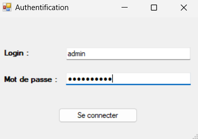
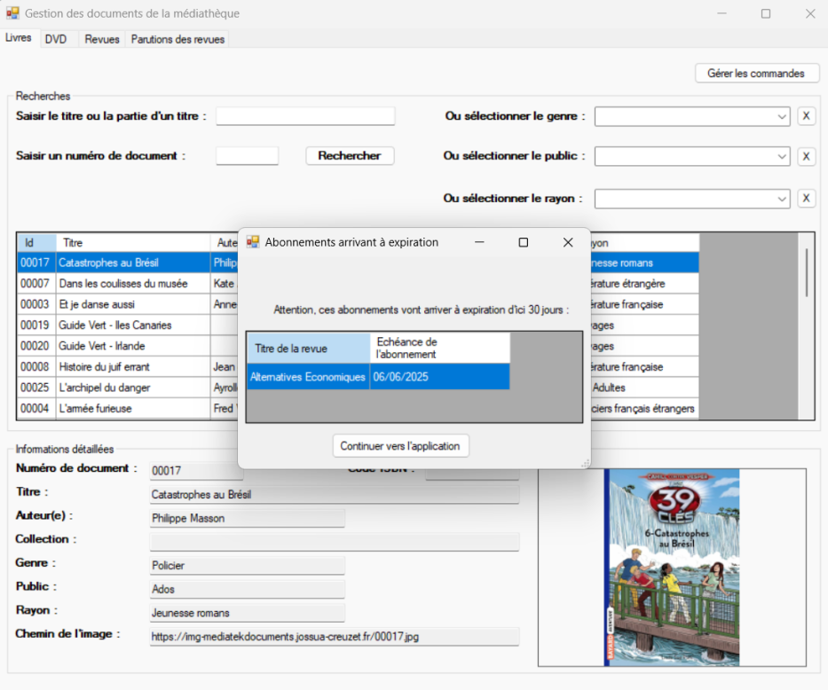
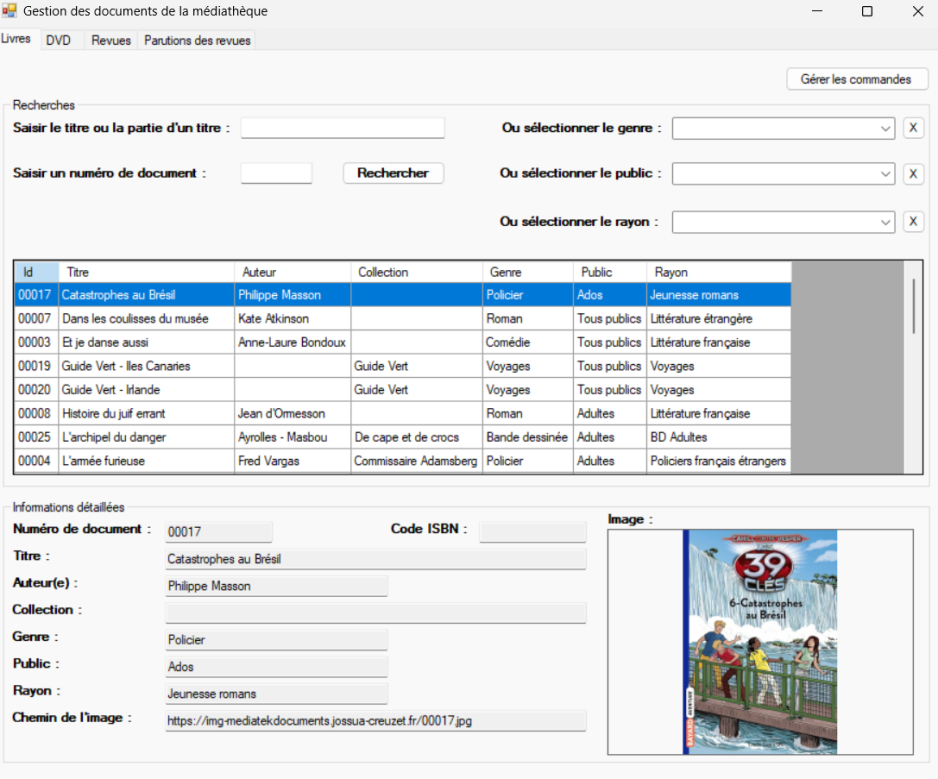
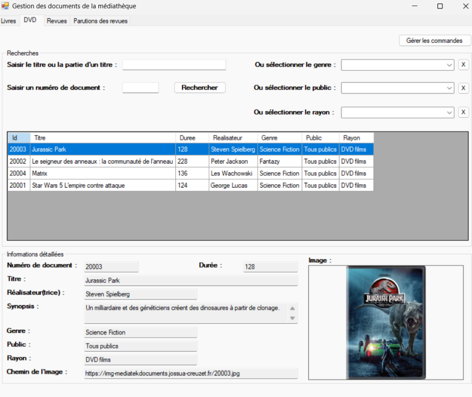
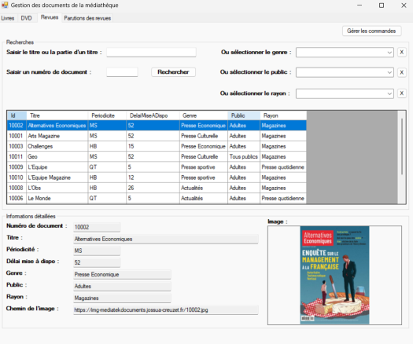
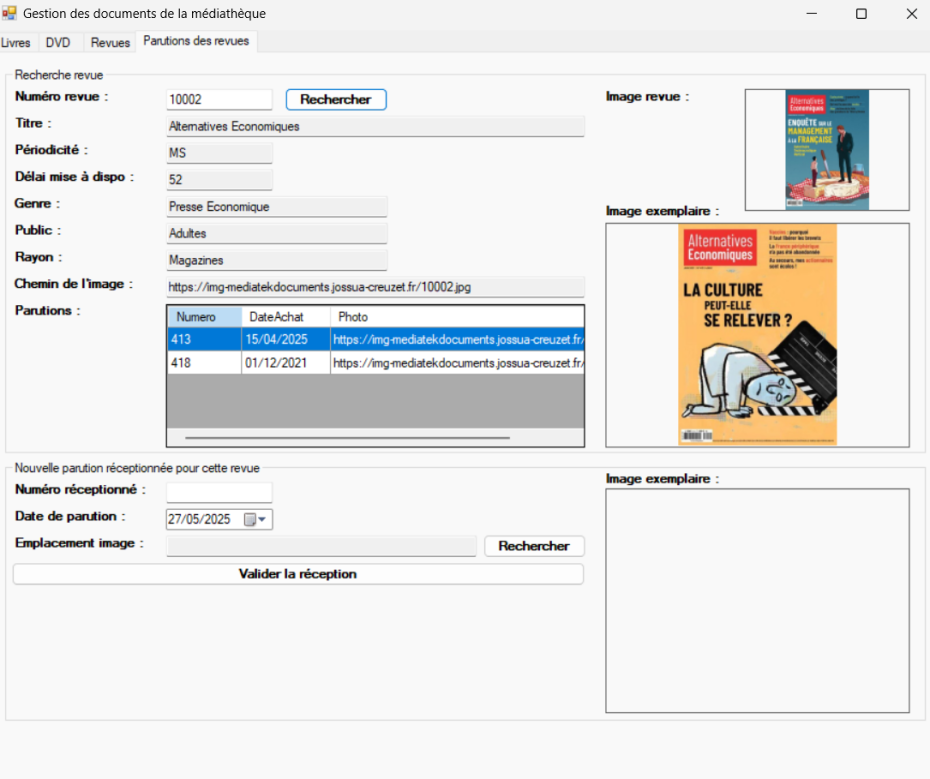
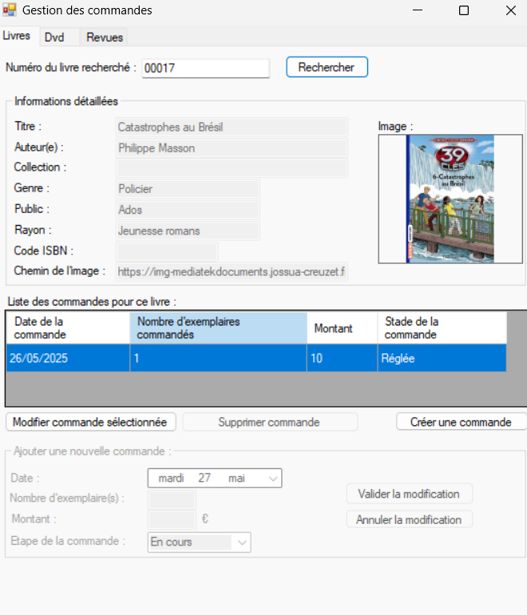
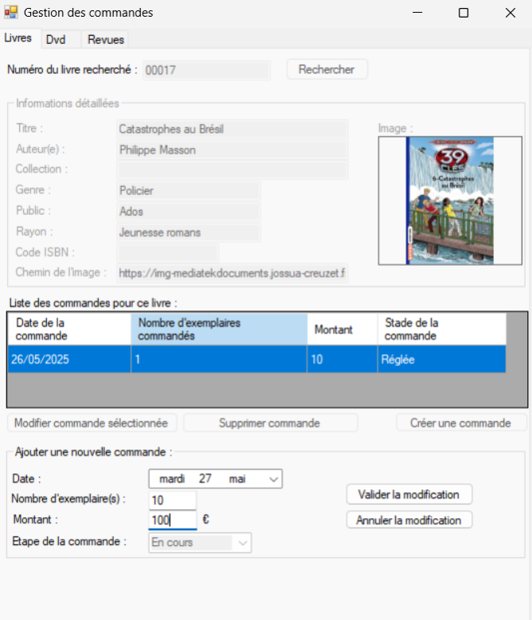
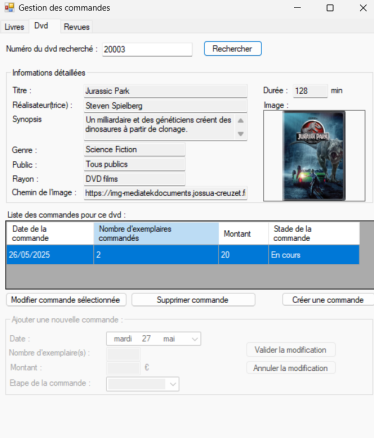
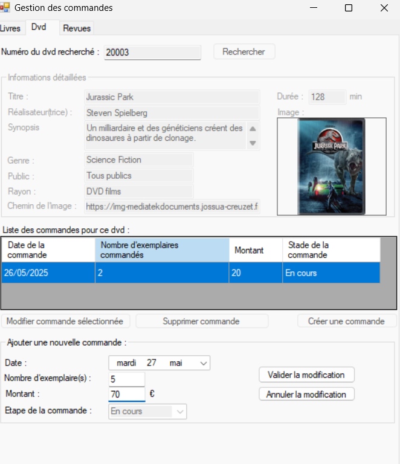
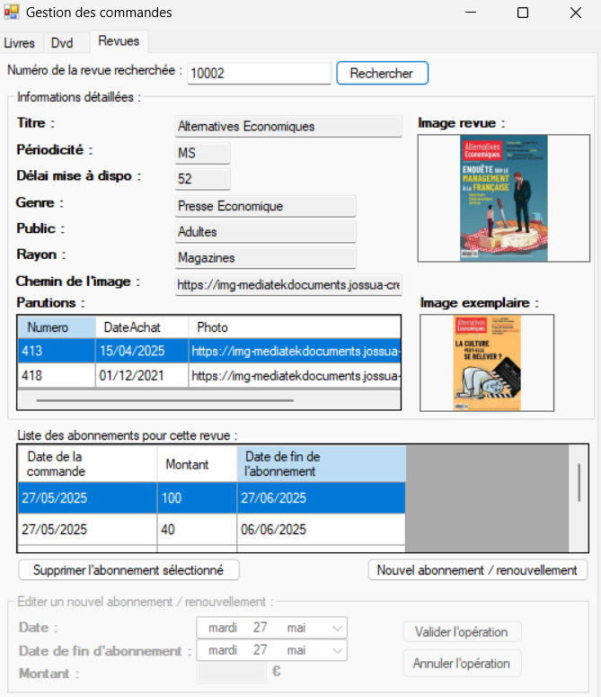